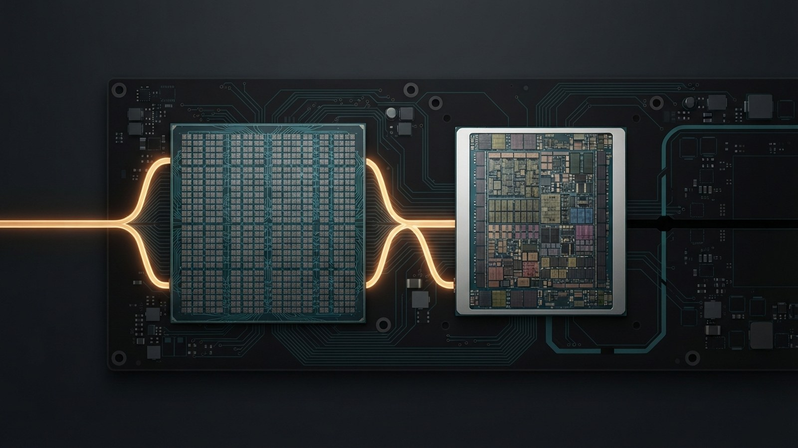
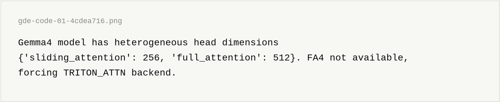
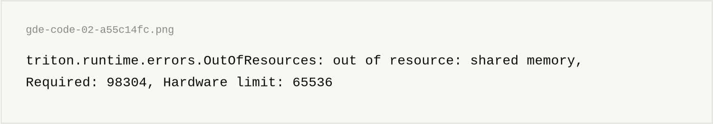
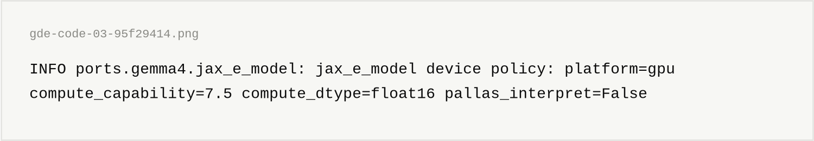
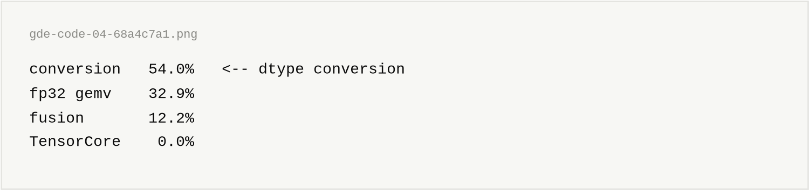
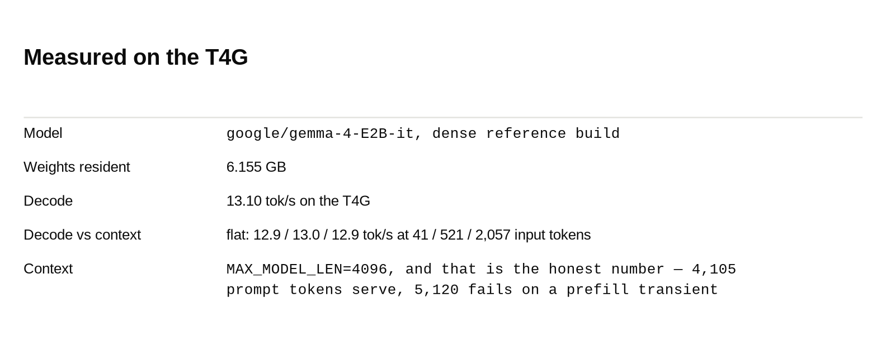

This article is about running a hand-written Gemma 4 port in pure JAX on three different accelerators, and about the two places the abstraction leaks.
The code is here:
This project aims to serve one Gemma 4 checkpoint from one JAX port across every accelerator I can rent, and to find out — by measurement, not by reading docs — which parts of "it's just JAX" are true.
The port lives in ports/gemma4/ and is driven by a generation loop behind an OpenAI-compatible server. No PyTorch, no vLLM, no torch_xla. The same code runs on Cloud TPU v5e and v6e, and on an NVIDIA T4G attached to an AWS Graviton2 host.
"Pure JAX" is the whole experiment. If the port is really portable, the only thing that should change between those rigs is a config file.
It mostly is. Two things are not, and they are the interesting part.
Any port has to carry four irregularities, and none of them are optional:
head_dim=256, global layers use 512. Most inference stacks assume one head dimension per model.That first one is worth dwelling on, because it is what breaks other stacks. On the vLLM path, the heterogeneous head dims force the Triton attention backend:

And on a Turing GPU that backend then asks for shared memory the hardware does not have:

JAX never enters that conversation. Attention is ordinary XLA rather than a hand-tiled kernel, so there is no per-block shared-memory ceiling in the attention path at all. This is the clearest win of the whole exercise: the irregular geometry that is a special case everywhere else is just array shapes here.
This is the single most expensive lesson in the repo.
A wrong compute dtype does not raise. It emulates. bfloat16 on a pre-Ampere GPU does not fail — XLA routes it through fp32 and you simply lose most of your decode to conversion. Nothing in the logs is red.
So the port does not take the dtype from a config file. It reads the live compute capability off the device and decides:
COMPUTE_DTYPE = float16 if IS_PRE_AMPERE else bfloat16On TPU that resolves to bfloat16, which the MXUs run natively. On an SM 8.9 Ada card, bfloat16. On the SM 7.5 Turing card in this rig, float16 — Turing's only real 16-bit datapath, since it has neither bf16 nor fp8.
The first line the process emits states what it decided, so a misconfiguration is one grep away rather than a mystery in the throughput:

pallas_interpret=False matters just as much — it is the difference between serving and silently running a simulator.
Here is the part that does not port, and it is not a bug — it is a real hardware difference wearing a portable API.
The fused W4A16 kernel is written in Pallas, and it is tiled for TPU VMEM, which gives you 16 MB per core. At this model's shapes the tiles want 550 KiB – 1.1 MiB per block.
On a GPU, Pallas lowers through Triton, and those tiles become shared memory. Turing gives you 64 KiB per block. Ada raises the ceiling, but nowhere near a megabyte.
So the same Pallas kernel that is the fast path on TPU cannot run on either GPU. The rig computes the requirement at startup and refuses with the arithmetic attached, rather than dying as a cryptic OutOfResources at the first token:
check_w4a16_fits_scoped_memory()The practical consequence: the GPU rigs serve the dense reference checkpoint at 16-bit, while the TPU rigs serve the -qat-w4a16-ct export. Same port, same model family, different weights — because a kernel written against VMEM does not describe a GPU.
If you take one thing from this article, take that one. Pallas is portable as an API and not portable as a memory model.
200 OKA padding-eviction bug in the KV ring cache cost a week, and it is the kind only Gemma 4's geometry produces.
The invariant is: a cache index is an absolute real position, and padding never occupies an index a real position uses. A port that right-pads into the 512-slot ring violates it, and the failure mode is not a crash or a NaN. It is a token loop — a clean HTTP 200, status: "success", and output like The The The The.
Nothing in the logs is red. Nothing in the metrics is red. The only thing that catches it is a degeneracy check on the output itself, which the server now runs on every response.
The scariest bugs in this whole project all returned success.
Enough that the exercise was worth it:
max_new_tokens is a static_argnames entry, so (bucket, max_tokens) is the compiled shape on every backend. Warm up at the shape you measure — the same request took 18.77 s cold against 4.35 s warm.pip supplies CUDA. jax[cuda13] means the GPU rig installs in 117 seconds with no build step, no CUDA toolkit and no Rust — against a ~67-minute from-source build on the vLLM path.Profiling decode with xprof on the Turing card gave this:

Zero. 1,466 ms of kernels across 108 distinct kernels on a Tensor Core GPU, without one Tensor Core firing. More than half of decode went to converting numbers between formats before any math happened.
The obvious hypothesis was bf16 weights being converted on a chip with no bf16 datapath. So I converted the checkpoint to float16 host-side and re-ran. Parameter dtypes read {'float16': 541, 'uint8': 1, 'int8': 1} — and conversion stayed at 54.0%.
The obvious explanation is wrong and I do not yet know the real one. I would rather publish the open question than a tidy story.
What I can stand behind is that the measurement is real: the same profile on a different instance, a different AMI and a restored cache landed at 1466.0 ms against 1467.1 ms. 1.1 ms apart on 1467.
The next rig is the control for exactly this — the same port on an Ada card, where _compute_dtype() returns bfloat16 with no code change and the conversion pressure is removed at the hardware level. If 54% survives onto a bf16-native chip, the cause was never dtype at all.

Quote the gauge, not end-to-end. End-to-end throughput does fall with a longer prompt (12.43 → 8.22), but that is prefill being linear in the padded bucket, not decode degrading. They are two different claims and conflating them makes a benchmark a lie.
One JAX port, three accelerators. The model code, the compilation cache and the static-shape discipline all transferred untouched, and Gemma 4's awkward geometry — the thing that forces a special-case kernel on other stacks — turned out to be the easiest part, because in JAX it is just shapes.
What did not transfer was the one piece written against a specific memory model. Pallas gives you a portable API on top of VMEM and shared memory, and those are not the same size. That boundary is worth knowing before you plan a port around a fused kernel.